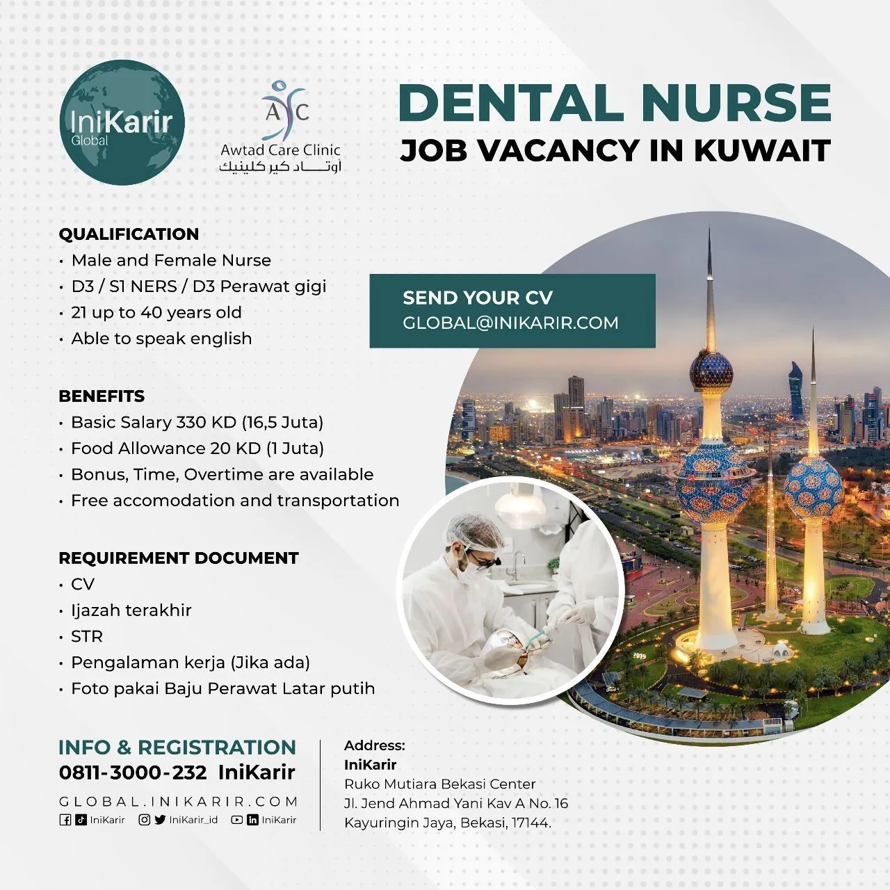

IniKarir
Lowongan Perawat Gigi (Dental Nurse) di Kuwait
Perawat Gigi
Daftar loker Dental Nurse di luar negeri. Gaji hingga 17,5 Juta plus bonus menarik!
Detail Lowongan
IniKarir sedang membuka loker luar negeri sebagai Dental Nurse atau Perawat Gigi yang nantinya akan diberangkatkan ke Kuwait. Apakah kamu tertarik menjadi Dental Nurse? Yuk simak info lowongan kerja luar negeri termasuk kualifikasi & benefitnya berikut ini:
Posisi
Kualifikasi
- Pria atau Wanita
- D3/S1 NERS / D3 Perawat Gigi
- Umur 21 hingga 40 Tahun
- Mampu/bersedia berbahasa Inggris

Syarat Dokumen
- CV
- Scan Ijazah terakhir (PDF)
- Scan STR (PDF)
- Foto pakai baju perawat berlatar putih
- Surat pengalaman kerja (opsional)
Benefit
- Gaji pokok 330 KWD (16,5 Juta Rupiah)
- Tunjangan makan 20 KWD (1 Juta Rupiah)
- Bonus dan overtime fee tersedia
- Akomodasi & transportasi gratis
Alur Proses Pendaftaran
Deskripsi Alur Proses

Catatan
FAQs
Pertanyaan Umum
Berikut ini adalah pertanyaan yang sering ditanyakan para peserta:
Semua loker yang ada di IniKarir Legal dan Resmi, karena kami sudah bekerja sama dengan perusahaan-perusahaan yang legal dan terdaftar di Kementrian Tenaga Kerja RI, Resmi karena semua info lowongan kerja di luar negeri sudah memiliki SIP2MI dan terdaftar di BP2MI sehingga proses legal, resmi dan aman.
Semua loker yang ada di IniKarir legal dan sudah terdaftar di kemenaker maupun badan milik pemerintah serta lengkap dengan legalitasnya.
Semua loker yang ada di IniKarir legal dan sudah terdaftar di kemenaker maupun badan milik pemerintah serta lengkap dengan legalitasnya.
Semua loker yang ada di IniKarir legal dan sudah terdaftar di kemenaker maupun badan milik pemerintah serta lengkap dengan legalitasnya.
Semua loker yang ada di IniKarir legal dan sudah terdaftar di kemenaker maupun badan milik pemerintah serta lengkap dengan legalitasnya.
Belum menemukan pekerjaan yang sesuai?
Lampirkan E-Mail sekarang juga agar tidak ketinggalan informasi tentang lowongan di luar negeri impianmu!